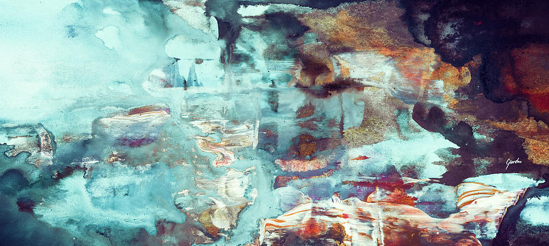

Welcome to the CSS Practice Webpage!
In 1997, an orange cat names Stubbs became honorary mayor of the Alaskan town of Talkeetna. With a population of 772 in 2000, it would not have taken too many votes to earn the position (and the small town did not actually have a real, human mayor. anyway), but Stubbs proved adept at the role, gaining fans from around the world and "serving" in the position for years, greeting tourists and becoming a beloved symbol of the town until his death in 2017.
In 1966, Fredric Baur developed the ingenious idea for Procter & Gamble to uniformly stack chips inside a can instead of tossing them in a bag. Baur was so proud of his invention that he wanted to take it to the grave—literally. He communicated his burial wishes to his family, and when he died at age 89, his children stopped at Walgreens on the way to the funeral home to buy his burial Pringles can. They did have one decision to make, though. "My siblings and I briefly debated what flavor to use," Baur's eldest son, Larry, told Time. "But I said, 'Look, we need to use the original.'" Fredric Baur, an American classic.
For millions of people, the coffee break is a key but often under-appreciated part of each day. To stop and give the break its proper due, the town of Stoughton, Wisconsin, hosts an annual Coffee Break Festival. The gathering includes coffee tastings, "brew-offs," and bean-spitting contests. Why Stoughton? According to city officials, the coffee break was "born" in the city in the late 1800s, as women working at the local Gunderson Tobacco Warehouse began the ritual of pausing during the workday to brew up some coffee and have a chat.
They don't call it a "good cry" for nothing. Studies suggest that crying stimulates the production of endorphins, our body's natural painkiller, and feel-good hormones, like oxytocin. In short, crying more will ultimately lead to smiling more.
An actual research study commissioned by Guinness found that an estimated 162,719 pints of Irish stout go to waste every year… via mustaches. The study found that 0.56 milliliters of Guinness get trapped in the average beard or mustache with each sip. And it takes about 10 sips to finish a pint. An estimated 92,370 Guinness consumers every year in the UK have facial hair. Assuming they consume on average 180 pints each a year, the total cost of wasted Guinness annually is about $536,000. The moral of this story? Shave and save!